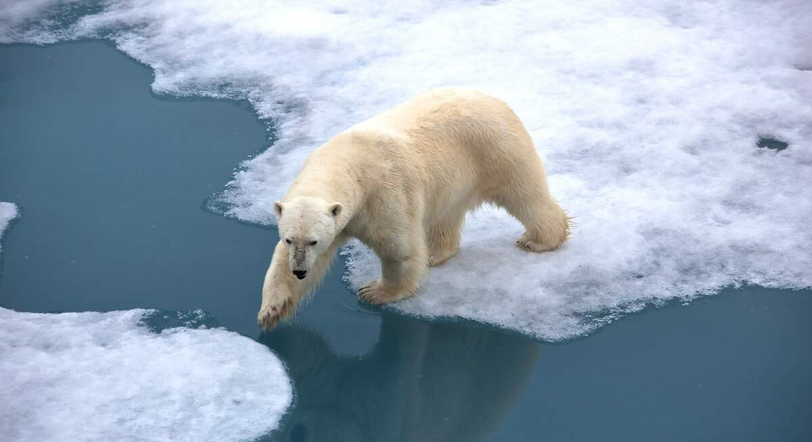

Nuestro medio ambiente...
El medio ambiente ha emergido como un tema de gran relevancia en los últimos años, dado el notable impacto del calentamiento global. Esta tendencia se evidencia claramente en fenómenos como el aumento de las temperaturas, que han alcanzado niveles extremos, con registros cercanos a los 50 grados Celsius en verano y mínimas que no descienden de los 10 grados Celsius en invierno. Este fenómeno no solo afecta a localidades como Obregón, sino que tiene repercusiones a escala global, como se observa en la progresiva disminución de los casquetes polares debido al deshielo.
La resolución de esta problemática no es inmediata, dada su complejidad inherente. Es por ello que estamos comprometidos a contribuir con acciones concretas, por modestas que sean. En este sentido, nos complace ofrecerte una serie de videos e información que te orientarán sobre cómo puedes sumarte a esta causa y aportar tu granito de arena. Este esfuerzo colectivo no solo busca sensibilizar sobre la importancia de la preservación ambiental, sino que también pretende fomentar prácticas que promuevan el cuidado y mantenimiento de nuestras áreas verdes en condiciones óptimas.
En el siguiente video se habla de como podemos usar el método de reciclaje 3R esto ayudaría a una mejor utilización de basura y poder reciclar mejor, esta es una forma de ayudar en las áreas de la escuela contaremos botes para poder reutilizar para que lleven acabo las 3R.
En el siguiente vídeo mencionado se aborda de manera adecuada la importancia de preservar y utilizar el agua de forma responsable. Este tema adquiere relevancia dada la seriedad del problema, que se refleja en la escasez de agua en diversas ciudades, como es el caso de Monterrey. Es importante destacar que esta problemática no está alejada de nuestra realidad en Obregón, y es fundamental tomar medidas preventivas para evitar situaciones similares en el futuro.
Estos articulos sobre el medio ambiente podrian interesarte...
Cambio climático: El ser humano ha calentado el planeta a un nivel nunca visto en los últimos 2000 años
Todos los científicos coinciden en observar que el clima está cambiando en todos los rincones del planeta a una escala sin precedentes. Algunos de esos cambios serán irreversibles por miles y cientos de miles de años. Solo una acción enérgica y duradera en la reducción de gases de efecto invernadero puede limitar su alcance.
"Las consecuencias del cambio climático son irreversibles", alerta la ONU en el informe más completo hasta la fecha
"Una alerta roja para la humanidad". Así es como el secretario general de Naciones Unidas, António Guterres, describe las conclusiones de un histórico informe de la ONU publicado este lunes sobre el cambio climático, el más completo hasta la fecha.

La Tierra es nuestro hogar. Así está cambiando
En todo el mundo, los bosques se enfrentan a amenazas existenciales derivadas de la deforestación, el cambio climático, las plagas y los incendios forestales. Estos ecosistemas son sólo un ejemplo de cómo está cambiando la vida en nuestro planeta.